(times
(times  in an APD) and thermal noise
in an APD) and thermal noise  set
set  ; bit error rate
; bit error rate  ; NEP is the power giving SNR = 1 in 1 Hz.
; NEP is the power giving SNR = 1 in 1 Hz.
Shot noise (derivation)
Photoelectrons arrive as a Poisson process (coherent light, Poisson photon statistics) of rate
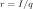
(Schottky 1918). Counting in time : variance
: variance 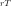
, so the current variance in bandwidth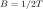
is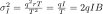
. With APD gain, each primary carrier yields a random number of secondaries: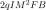
.SNR and regimes
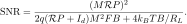
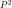
; shot-noise (quantum) limited: SNR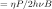
∝ . APDs help when thermal noise dominates; optimum
. APDs help when thermal noise dominates; optimum  balances the two (Johnson 1928).
balances the two (Johnson 1928).
Digital receivers
Gaussian noise, threshold midway:
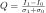
,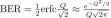
. Quantum limit for OOK: 10 photons per bit average (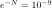
with 20 photons per "1").NEP and the minimum detectable power
The noise-equivalent power is the optical power that gives SNR = 1 in a 1 Hz bandwidth, in W/√Hz: in a bandwidth  the minimum power is
the minimum power is
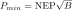
, because noise currents grow as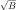
. The detector alone (dark current) sets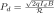
; the load sets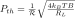
(Nyquist 1928). Detectivity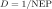
, specific detectivity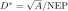
(compares detectors of different area). Numbers: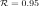
A/W, NEP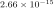
W/√Hz,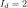
nA, GHz,
GHz, 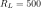
Ω: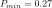
nW, nW,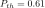
µW. The resistor is 2000 times worse than the detector's NEP: a 50–500 Ω load throws away the detector's sensitivity, which is the reason for transimpedance amplifiers and APDs (solved exam papers).Worked example
pin receiver,
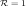
A/W, kΩ (TIA feedback),
kΩ (TIA feedback), 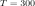
K,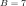
GHz (10 Gb/s): thermal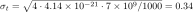
µA. For with
with 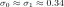
µA: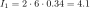
µA, i.e. average power ≈ 2 µA/1 A/W = 2 µW = −27 dBm sensitivity (shot noise at 4 µA is only 0.1 µA, negligible).Picture: SNR versus received power ( A/W, 1 GHz, 1 kΩ)
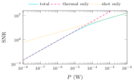
Slope 2 while thermal noise dominates, slope 1 once the receiver is shot-noise (quantum) limited; the crossover is at
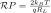
(52 µA here).Engineering applications
Link budgets (sensitivity in dBm at a target BER), choice pin vs APD vs optical preamplifier, LiDAR range equation, image-sensor SNR (shot-noise-limited pixels), coherent receivers (local oscillator lifts the signal above thermal noise to the shot-noise limit).
Exam-style exercise
A Si pin photodiode at 850 nm has
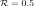
A/W, dark current 5 nA, area 1 mm². (a) NEP if dark-current shot noise dominates. (b) Specific detectivity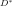
. (c) Minimum detectable power in a 1 MHz bandwidth. (d) What if it is read with a 100 kΩ resistor at 300 K?Solution
(a)
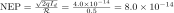
W/√Hz. (b)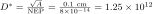
cm √Hz/W. (c) pW. (d)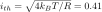
pA/√Hz vs dark shot 0.040 pA/√Hz: the resistor dominates by 10×, the effective NEP becomes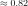
pW/√Hz.Pitfall
Shot noise is white up to the detector bandwidth; using the bit rate instead of the noise bandwidth (≈ 0.7× bit rate for NRZ) misestimates SNR.